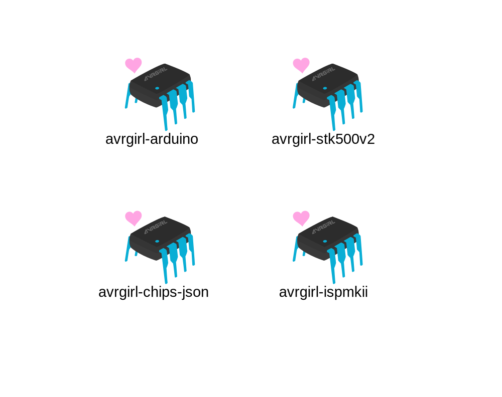

refactoring the dinosaur
- @noopkat -
suz hinton
@noopkat
NYC
front-end dev @ kickstarter
Problems
Accessibility
Ugly
Error management
I am a modern lady
with modern taste in software
we can do better for hardware apps
for both end users, and developers
Atmel® ATtiny45
4KB program memory
256B EEPROM
€1
AVRDUDE
AVR Downloader/UploaDEr
written in C
open source
avrdude strengths
it works really well
been around a long time
traction++
avrdude limitations
command line only
no tests
fragmented community
creating a NodeJS alternative
NodeJS advantages
small family of packages
easier to test
better flexibility for use
more accessible*
publish it for others!
avrgirl
AVR General Isp pRogramming tooL
this posed a challenge or two
challenge #1
support USB programmers
Protocols
STK500v1
STK500v2
AVR109
USBtinyISP
challenge #2
support all the Atmel® chips!
> 400
400
135
200MB of XML
npm install xml2js

why
better developer experience
♥
beautiful docs
ease of use
modern
better user experience
♥
improved a11y
ease of use
non scary
github.com
/noopkat/avrgirl
meow.noopkat.com
lessons
love
loneliness
> console.log('thank you');
> github.com/noopkat/avrgirl
> meow.noopkat.com
←
→
Go to slide: